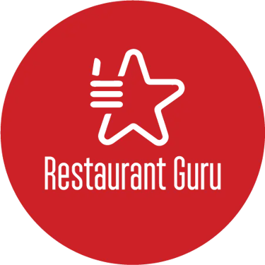
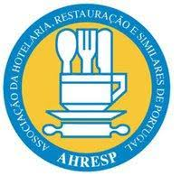

CARNES NOBRES & CHAPA QUENTE
Novilho suculento, carne certificada Black Angus e o método Smash selado na chapa incandescente. Crosta crocante por fora e suculência pura por dentro.
Uma viagem pelo mundo dos sabores artesanais. O aroma do pão brioche dourado na chapa, a carne de novilho prensada ao ponto com crosta caramelizada, o queijo derretido e as reduções de autor. Feche os olhos, sinta o aroma e antecipe o prazer.
Carne selecionada, produtos frescos e métodos autênticos.
Receitas inspiradas em destinos globais com toque português.
Cinco Estrelas, Restaurant Guru e LuxLife no Montijo.
No Two Burger, acreditamos que comer um hambúrguer deve ser um ritual. Da chapa fervente ao primeiro contacto visual, cada detalhe foi afinado para despertar o seu apetite.
Novilho suculento, carne certificada Black Angus e o método Smash selado na chapa incandescente. Crosta crocante por fora e suculência pura por dentro.
O irresistível Bolo do Caco tradicional da Madeira tostado com manteiga aromatizada e o Pão Brioche fofo e amanteigado, pensados para abraçar cada ingrediente com perfeição.
Redução de Vinho do Porto cozinhada lentamente com cebola, mostarda e mel artesanal, molho barbecue fumado e cremes de queijo que elevam o sabor ao próximo nível.
O 2Burger é um projeto familiar, cujo ingrediente principal é a paixão — paixão pela cozinha autêntica, pelo acolhimento caloroso e pela arte de criar momentos felizes à mesa.
Em 2017, o centro histórico do Montijo viu nascer este espaço acolhedor com uma atmosfera única que rapidamente conquistou a comunidade local e visitantes de todo o país. Hoje, a nossa equipa mantém o mesmo rigor: ingredientes frescos diários, parcerias com pequenos produtores familiares e métodos artesanais de preparação.
Desde a escolha do corte das carnes até ao corte dos vegetais frescos e confecção das sobremesas, nada no Two Burger é industrializado.
A opinião de quem nos visita é o nosso maior orgulho e a garantia de uma refeição extraordinária no centro do Montijo.
Galardões que comprovam a dedicação diária à excelência da nossa cozinha e ao atendimento no Montijo.


Localizado no coração do centro histórico do Montijo, junto à Câmara Municipal.
Rua Miguel Pais, nº 8, 2870-235 Montijo
(No centro histórico do Montijo, junto aos Paços do Concelho / Câmara
Municipal)
Respostas rápidas às perguntas mais comuns sobre o Two Burger no Montijo.
Sim! Fazemos Take Away diariamente para recolha na nossa loja através do telefone 910 393 294. Para entregas ao domicílio comodamente em sua casa, estamos disponíveis na aplicação Uber Eats.
Estamos abertos de terça-feira a domingo em dois turnos: almoços das 12:00 às 15:00 e jantares das 19:00 às 23:00. O restaurante encerra à segunda-feira para descanso de toda a equipa.
Dado que o nosso espaço no centro histórico do Montijo tem uma lotação acolhedora e intimista com grande afluência, recomendamos vivamente a reserva antecipada pelo 910 393 294, especialmente aos fins de semana e jantares.
Sim, temos o hambúrguer Las Vegan (160g de quinoa, feijão preto, batata-doce e tofu) e o Vegeta (grão-de-bico com especiarias indianas e cogumelos Portobello), assim como poke bowls de arroz com vegetais frescos e opções de frango como o Moulin Rouge e Casablanca.
Aceitamos pagamentos em numerário, cartões de débito/crédito (Multibanco/Visa/Mastercard) e MB WAY.